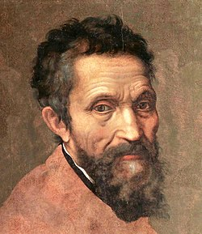
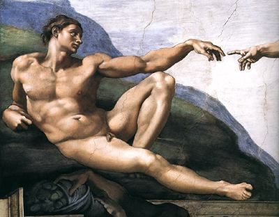

La creació d'Adam
Galeria
Formulari
Creador
Inici
Descripció
La creació d'Adam és una obra de Miquel Àngel Buonarroti plasmada en el sostre de la famosa Capella Sixtina. La representació està basada en una escena del Gènesi. En ella, Déu dóna la vida a Adam, el primer home de la Terra. Adam s'ha situat a l'esquerra, jaient sobre un monticle de terra que simbolitza la seva arribada a la nostra realitat. Déu s'ha ubicat a la zona dreta sorgint del cel, envoltat d'un grup d'àngels nus i una espècie de mantell Borgonya que els envolta. Miguel Ángel l'ha representat com un ancià vestit amb una túnica porpra, amb els cabells i la barba blanquinosa. En l'obra també apareix Eva, la primera dona de la Terra, situada sota el braç protector del creador, que la sosté anunciant la seva futura creació. El grup que envolta a Déu i el mateix personatge estan embolicats en un remolí de vent i velocitat, assenyalant el potent alè de vida que insufla a Adam. Miguel Ángel va dotar als seus personatges d'una forta fesomia, però d'una immensa i enlluernadora bellesa, confirmant les paraules de l'Antic Testament, segons les quals l'Home va ser creat a imatge i semblança de Déu. El més significatiu de l'obra és la unió de les dues figures principals a través de les mans de tots dos personatges, que aixequen els seus dits assenyalant-se mútuament, a escassos centímetres un de l'altre. Aquesta commovedora unió és l'eix central que dóna sentit a la representació, i en ella es vol plasmar la força i el misteri de la creació de la vida humana. Alguns teòrics consideren que les figures i el mantell que envolta a Déu seria una representació del cervell humà, mentre que altres suposen que es tracta d'una bella al·legoria de l'úter femení, sent la tela verda que penja del conjunt, un símbol del cordó umbilical que acaba de ser tallat. Aquesta obra és potser l'al·legoria més poètica i bella de l'origen de l'ésser humà que alguna vegada s'ha creat.
Autor
Michelangelo Buonarroti (Caprese 6 de març de 1475 - Roma 18 de febrer de 1564), conegut en espanyol com Miquel Àngel, va ser un arquitecte, escultor i pintor italià renaixentista, considerat un dels més grans artistes de la història tant per les seves escultures com per les seves pintures i obra arquitectónica.1 Va desenvolupar la seva tasca artística al llarg de més de setanta anys entre Florència i Roma, que era on vivien els seus grans mecenes, la família Mèdici de Florència i els diferents papes romans. Va ser el primer artista occidental del que es van publicar dues biografies en vida: Le Vite, de Giorgio Vasari, publicada en 1550 en la seva primera edició, en la qual va ser l'únic artista viu inclòs, 2 i Vita de Michelangelo Buonarroti, escrita en 1553 per Ascanio Condivi, pintor i deixeble de Miquel Àngel, que recull les dades facilitades pel mateix Buonarroti.3 va ser molt admirat pels seus contemporanis, que l'anomenaven el Divino.4 Benedetto Varchi, el 12 de febrer de 1560, li va enviar una carta en nom de tots els florentins dient-li: ... tota aquesta ciutat desitja submisament poder-vos veure i honrar tant de prop com de lluny ... La vostra Excel·lència ens faria un gran favor si volgués honrar amb la seva presència la seva pàtria. Tolnay (1978, pàg. 14) Va triomfar en totes les arts en què va treballar, caracteritzant-se per la seva perfeccionismo.a L'escultura, segons havia declarat, era la seva predilecta i la primera a la qual es va dedicar; a continuació, la pintura, quasi com una imposició per part del papa Juli II, i que es va concretar en una obra excepcional que magnifica la volta de la Capella Sixtina; i ja en els seus últims anys, va realitzar projectes arquitectònics.
Retrat de Michelangelo Buonarroti

Zoom obra
